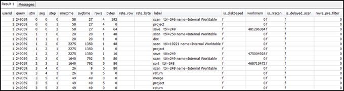

SVL_QUERY_SUMMARY 뷰 사용
스트림 단위의 쿼리 요약 정보에 대한 분석 방법은 다음과 같습니다.
-
다음 쿼리를 실행하여 쿼리 ID를 확인합니다.
select query, elapsed, substring from svl_qlog order by query desc limit 5;substring필드에서 잘려있는 쿼리 텍스트를 검사하여 쿼리를 표현할query값을 결정합니다. 쿼리를 한 번 넘게 실행한 경우에는query값이 더 낮은 행의elapsed값을 사용하세요. 이 행이 컴파일 버전의 행입니다. 다수의 쿼리를 실행한 경우 쿼리의 포함 여부를 확인하는 데 사용하는 LIMIT 절에서 사용되는 값을 높일 수도 있습니다. -
SVL_QUERY_SUMMARY에서 쿼리에 사용할 행을 선택합니다. 결과 순서는 stream, segment 및 step의 순으로 정하세요.
select * from svl_query_summary where query = MyQueryID order by stm, seg, step; -
쿼리 계획을 쿼리 요약에 매핑 섹션의 정보를 사용하여 단계를 쿼리 계획의 작업으로 매핑합니다. 이때 각 단계는 행 값과 바이트 값이 대략적으로 동일해야 합니다(쿼리 계획의 행 * 폭). 그렇지 않은 경우 권장 솔루션은 테이블 통계 누락 또는 만료 섹션을 참조하세요.
-
어떤 단계든지
is_diskbased필드에t(true) 값이 있는지 확인합니다. 쿼리 처리를 위해 시스템에 할당된 메모리가 충분하지 않을 경우 해시, 집계 및 정렬 연산자는 데이터를 디스크에 작성할 가능성이 높습니다.is_diskbased가 true인 경우 권장 솔루션은 쿼리에 할당되는 메모리 부족 섹션을 참조하세요. -
label필드 값을 살펴보면서 여러 단계 중 어디에서든지 AGG-DIST-AGG 시퀀스가 있는지 확인합니다. 이러한 시퀀스는 2단계 집계를 의미하는 것으로 비용이 높습니다. 이 문제를 해결하려면 GROUP BY 절을 변경하여 분산 키(키가 다수인 경우 첫 번째 키)를 사용하세요. -
각 세그먼트마다
maxtime값을 살펴봅니다(이 값은 세그먼트를 구성하는 모든 단계에서 동일합니다).maxtime값이 가장 높은 세그먼트를 찾아 각 단계에서 다음 연산자를 확인합니다.참고
maxtime값이 높다고 해서 반드시 세그먼트에 문제가 있다는 것을 의미하지는 않습니다. 높은 값에도 불구하고 세그먼트의 처리 시간이 오래 걸리지 않을 수도 있습니다. 스트림을 구성하는 세그먼트는 모두 시간을 동일하게 맞춥니다. 하지만 일부 다운스트림 세그먼트는 업스트림 세그먼트에서 데이터를 가져올 때까지 실행하지 못하는 경우도 있습니다. 이러한 세그먼트는maxtime값에 대기 시간과 처리 시간이 모두 포함되기 때문에 시간이 더 오래 걸리는 원인이 될 수도 있습니다.-
BCAST 또는 DIST: 두 경우
maxtime값은 다수의 행을 재분산한 결과가 될 수 있습니다. 권장 솔루션은 최적이 아닌 데이터 분산 섹션을 참조하세요. -
HJOIN(해시 조인): 해당 단계의
rows필드 값이 쿼리에서 최종 RETURN 단계의rows값에 비해 매우 높은 경우 권장하는 솔루션은 해시 조인 섹션을 참조하세요. -
SCAN/SORT: 조인 단계 바로 앞에서 SCAN, SORT, SCAN 및 MERGE 단계를 순서대로 찾습니다. 이 패턴은 정렬되지 않은 데이터가 스캔 및 정렬을 거쳐 정렬된 테이블 영역과 병합된다는 것을 의미합니다.
SCAN 단계의 rows 값이 쿼리에서 최종 RETURN 단계의 rows 값에 비해 매우 높은지 확인합니다. 이러한 패턴은 실행 엔진이 나중에 무시되는 행을 스캔한다는 것을 의미하지만, 이는 비효율적입니다. 권장 솔루션은 불충분한 제한적 조건자 섹션을 참조하세요.
SCAN 단계의
maxtime값이 높은 경우 권장 솔루션은 최상이 아닌 WHERE 절 섹션을 참조하세요.SORT 단계의
rows값이 0이 아닌 경우 권장 솔루션은 정렬되지 않았거나 잘못 정렬된 행 섹션을 참조하세요.
-
-
최종 RETURN 단계 앞에 있는 5~10단계에서
rows값과bytes값을 검토하여 클라이언트로 반환되는 데이터 크기를 파악합니다. 이 프로세스는 기교가 필요할 수 있습니다.예를 들어 다음 쿼리 요약을 보면 세 번째 PROJECT 단계에서
rows값이 아닌bytes값이 제공되는 것을 알 수 있습니다. 5~10단계까지 선행하는 단계를 살펴보면서rows값이 동일한 단계가 발견되면 행과 바이트 정보를 모두 제공하는 SCAN 단계를 찾은 셈입니다.
비정상적으로 많은 데이터 볼륨을 반환하는 경우 권장 솔루션은 매우 큰 결과 집합 섹션을 참조하세요.
-
어떤 단계에서든지 다른 단계와 비교하여
bytes값이rows값에 비해 높은 경우가 있는지 확인합니다. 이 패턴은 다수의 열이 선택되어 있다는 것을 의미할 수 있습니다. 권장 솔루션은 큰 SELECT 목록 섹션을 참조하세요.